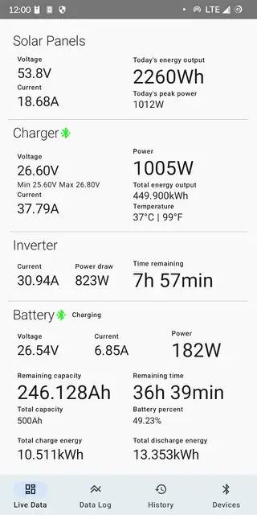
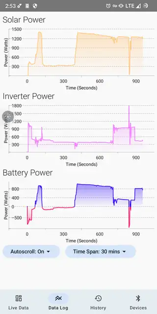

Solar
تعليم وعلوم
Solar is an app to monitor off grid solar setups over bluetooth. It supports simultaneous monitoring of the battery and solar charger. When both devices are connected it can calculate the inverter power. Unlike the OEM app it does not require fine location access and does not have internet permissio
✓ ترخيص مفتوح (GPL-3.0-only) · آخر تحديث: 2025-12-31
1.0.5الإصدار
2.9 MBالحجم
GPL-3.0-onlyالرخصة
Open in Kanzتحميل APK (2.9 MB)
Download APK
SHA-256: c46ccab3a07561867ad02f064985c2576364af2e3a23921eb1aa206b7f3b533a


تطبيقات تانية لنفس المطوّر (2)
More apps from this developer: com.codelv
امسح الكود لفتح صفحة التطبيق
Scan to open this app page
لو كنز مش متثبت عندك: نزّل متجر كنز.
Not installed? Get the Kanz store.